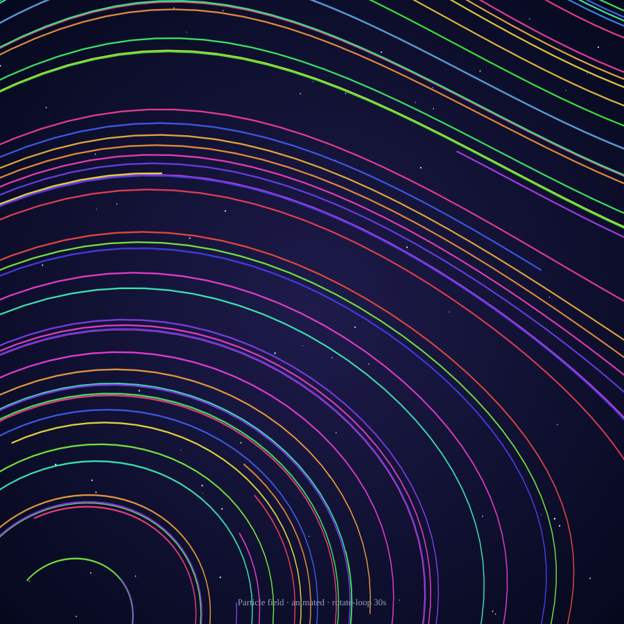

Particles in Glyph
Real-time GPU particle systems are the visualization paradigm SVG is worst at. Glyph can't do millions of particles at 60 fps — that's a different tool. But it can do the physics underneath them, deterministically, in one byte-stable SVG. Here's the best version, the animated variant, and the 4-step recipe to make either.
The output static · 144 trajectories

144 RK4-integrated trajectories. Color by local flow angle. One JSON spec → one SVG. Same bytes every time.
Same field, animated SMIL rotate-loop · 30 s per revolution

Open this in a browser to see it rotate. The streamlines stay fixed; the whole group spins around the center once per 30 seconds.
How to make it
Four steps. The whole spec fits on one page.
-
Define the vector field
Write
dx/dtanddy/dtas math expressions in two strings. Glyph's parser supportssin,cos,exp,sqrt, arithmetic, parentheses, and the variablesxandy.// ABC-flavored field — two pairs of counter-rotating vortices "dxdt": "sin(2*y) + 0.4*cos(x)", "dydt": "-sin(2*x) + 0.4*sin(y)", "domain": { "x": [-3.14, 3.14], "y": [-3.14, 3.14] }
Try other fields:
"-y","x"for pure rotation. Or"x*(1-x*x-y*y)","y*(1-x*x-y*y)"for a limit-cycle attractor. Each one paints a different signature. -
Pick your seed density
The
seedsblock tells Glyph where to start each trajectory.gridseeds give an even sampling; bigger numbers = denser output."seeds": { "kind": "grid", "rows": 12, "cols": 12 }, "step": 0.04, // RK4 step size (smaller = smoother) "maxSteps": 100 // trajectory length cap
12×12 = 144 trajectories is a sweet spot for visual density without bloating the SVG.
-
Color the trails
Three modes, each tells a different story:
"colorBy": "step" // rainbow from start to end of each trail "colorBy": "angle" // color = local flow direction "colorBy": "magnitude" // color = local flow speed
angle reads the cleanest at high seed counts. step is gorgeous but quadruples SVG size. magnitude highlights fast vs slow regions of the field.
-
Wrap it in compose, optionally animate
Drop the chart into a compose scene with a dark background and (optionally) a SMIL
rotate-loopon the chart child. The animation rotates the whole streamline group around its center.{ "compose": { "viewBox": { "width": 900, "height": 900 }, "theme": { "background": "#020617" }, "children": [ { "at": { "x": 50, "y": 50 }, "size": { "w": 800, "h": 800 }, "mark": "chart", "chart": { /* the streamline spec from steps 1–3 */ }, "animation": { "kind": "rotate-loop", "periodMs": 30000, "direction": "ccw" } } ] } }Drop the
animationblock to get the static version. Keep it for the spinning-galaxy effect.
The full spec
If you want to copy + paste a working starting point, here's the entire spec (static variant). Run it through Glyph and you'll get the image at the top of this page.
{
"compose": {
"viewBox": { "width": 900, "height": 900 },
"theme": { "background": "#020617" },
"children": [
{ "at": { "x": 0, "y": 0 },
"mark": "starfield",
"starfield": { "count": 60, "seed": 13,
"region": { "x": 0, "y": 0, "w": 900, "h": 900 } } },
{ "at": { "x": 50, "y": 50 },
"size": { "w": 800, "h": 800 },
"mark": "chart",
"chart": {
"version": "glyph/0.1",
"data": { "source": "inline:particles" },
"layers": [{
"mark": "streamline",
"encoding": {
"x": { "field": "x", "type": "quantitative",
"scale": { "domain": [-3.14, 3.14] } },
"y": { "field": "y", "type": "quantitative",
"scale": { "domain": [-3.14, 3.14] } }
},
"streamline": {
"dxdt": "sin(2*y) + 0.4*cos(x)",
"dydt": "-sin(2*x) + 0.4*sin(y)",
"seeds": { "kind": "grid", "rows": 12, "cols": 12 },
"step": 0.04,
"maxSteps": 100,
"domain": { "x": [-3.14, 3.14],
"y": [-3.14, 3.14] },
"colorBy": "angle"
}
}]
}
}
]
}
}
Save as particles.json and run glyph render particles.json. Done.